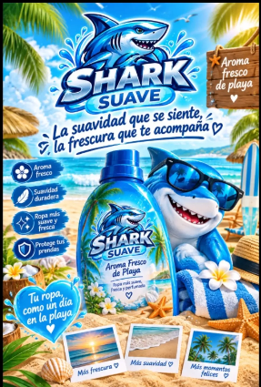

Sensación de suavidad
El suavizante textil se utiliza para aportar una sensación más suave a las prendas.
Conoce Shark Suave, un concepto de suavizante textil inspirado en los colores, la energía y la brisa de la playa.

El concepto visual de Shark Suave comunica frescura, suavidad y cuidado para la ropa.
El suavizante textil se utiliza para aportar una sensación más suave a las prendas.
La fragancia forma parte de la experiencia sensorial que se busca comunicar.
Una identidad visual alegre que evoca el mar, el sol y los días de playa.
El diseño presenta el producto como parte de la rutina de cuidado de la ropa.
Nota: los beneficios específicos del producto deben confirmarse con la fórmula final y las pruebas o indicaciones correspondientes.
Shark Suave une el cuidado cotidiano de la ropa con una imagen fresca y divertida. Su universo gráfico utiliza azules oceánicos, tonos claros y una mascota tiburón para transmitir cercanía y energía.
La propuesta combina una presentación publicitaria llamativa con un espacio informativo donde conocer los conceptos químicos generales relacionados con los suavizantes textiles.
Una propuesta de suavizante textil presentada con una identidad visual inspirada en el verano. La imagen de referencia destaca una botella azul y un aroma asociado a la playa.
La presentación de apoyo del proyecto menciona estos componentes o categorías de sustancias de forma general. La lista no confirma por sí sola la fórmula exacta de Shark Suave.
Los compuestos de amonio cuaternario se usan en algunos suavizantes como tensioactivos catiónicos, que pueden adherirse a las fibras textiles y contribuir a la sensación de suavidad.
Función generalEs una mezcla de sustancias aromáticas empleada para aportar un olor característico. El aroma concreto de la fórmula debe confirmarse con la información del producto.
Experiencia aromáticaPuede funcionar como medio líquido o disolvente en formulaciones de productos de limpieza y cuidado textil.
Medio de formulaciónSon sustancias que proporcionan color. Su presencia y el color específico dependen de la fórmula utilizada.
AparienciaAlgunos productos incorporan conservadores para ayudar a limitar el deterioro causado por microorganismos durante su almacenamiento.
Estabilidad del productoEstos son conceptos generales extraídos del material de apoyo. Antes de publicar una lista de ingredientes como fórmula real, verifica la receta final, las cantidades, las fichas técnicas y las indicaciones de seguridad del producto. No se muestran porcentajes ni una fórmula química específica porque no fueron confirmados en los materiales recibidos.
Las indicaciones de uso deben corresponder a la fórmula y al envase final de Shark Suave. Mientras se confirma esa información, consulta esta guía como recordatorio general.
Guía provisional: no sustituye la etiqueta del producto. Ajustar cuando se confirme el modo de uso oficial.
Revisa las instrucciones, las precauciones y la cantidad recomendada por el fabricante.
Utiliza únicamente la cantidad indicada para el producto y el tipo de lavado.
Mantén el producto en su envase identificado y fuera del alcance de niños y mascotas.
Respuestas breves sobre el concepto y la información disponible.
Esta página presenta Shark Suave como un proyecto escolar. La información comercial definitiva debe validarse con el equipo responsable del producto.
No. Los componentes se describen a partir de una presentación general sobre suavizantes. Hace falta confirmar cuáles se utilizan realmente en Shark Suave.
Los materiales recibidos no especifican cantidades ni porcentajes. Para publicarlos, se necesita la fórmula técnica confirmada.
Las instrucciones oficiales deben aparecer en la etiqueta final del envase o en la documentación técnica proporcionada por el responsable de la fórmula.
Un concepto playero para presentar el cuidado textil de una forma diferente.